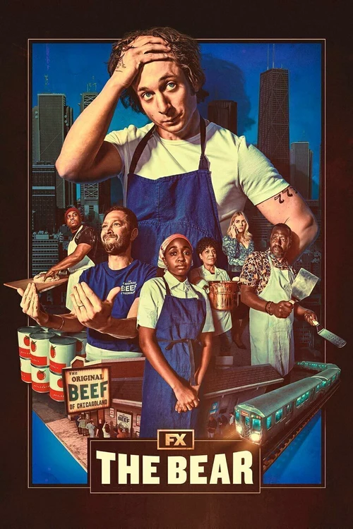
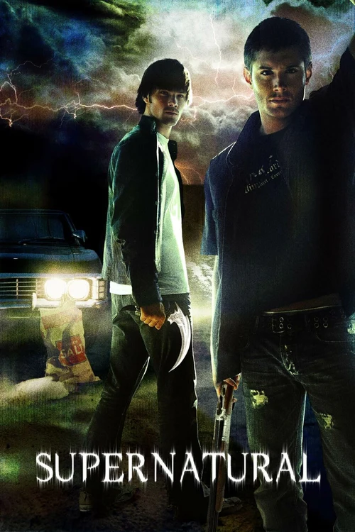
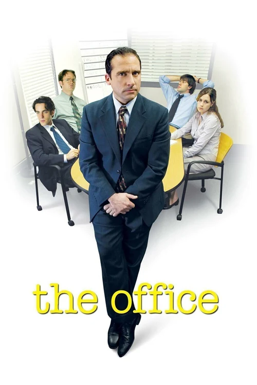

The Bear acompanha Carmy, um jovem e talentoso chef que retorna a Chicago para administrar o restaurante de sanduíches de sua família após a morte do irmão. Em meio ao caos da cozinha, ele enfrenta desafios profissionais e pessoais enquanto tenta transformar o pequeno negócio em um restaurante de sucesso.

Supernatural (Sobrenatural) conta a história dos irmãos Sam e Dean Winchester, que viajam pelos Estados Unidos caçando monstros, demônios e outras criaturas sobrenaturais. Durante suas aventuras, enfrentam grandes perigos e descobrem segredos sobre o Céu, o Inferno e o destino da humanidade. É uma série sobre família, coragem e amor entre irmãos.

The Office é uma série de comédia que acompanha o cotidiano dos funcionários de uma empresa de papel, mostrando situações engraçadas, constrangedoras e inesperadas no ambiente de trabalho, principalmente causadas pelo chefe Michael Scott.